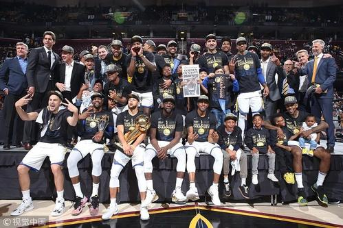
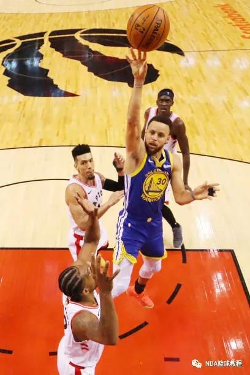
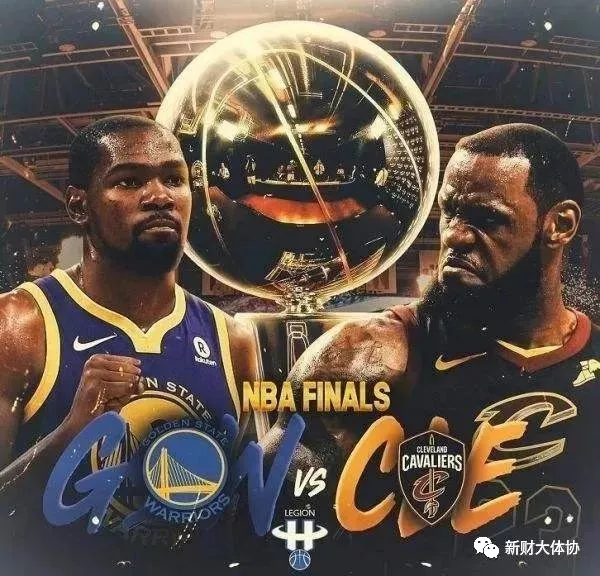

北京时间2020年10月1日，在奥兰多的迪士尼体育中心，洛杉矶湖人与迈阿密热火展开了2019-2020赛季对NBA总冠军的争夺。
詹姆斯终于拿到了他的第四冠。 夺冠战可能没那么悬念丛生，危机四伏，因为早早打花了，但冠军就是冠军，两座奖杯抱在怀里，沉甸甸地，象征着在这个多灾多难的赛季，总冠军更加来之不易。
这是戴维斯的第一冠，隆多的第二冠，丹尼·格林的第三冠，詹姆斯的第四冠，湖人的第17冠，在詹姆斯的第17个赛季。
跟前5场相比，第六场看上去赢得相当容易，但其中包含了以沃格尔为首的教练组、隆多以及詹姆斯很多心血，技术含量颇高，因为——湖人又一次变阵了。
总结下来，他们大胜热火的关键在以下几点：
1.湖人变阵，小阵容匹配湖人首发
2.戴维斯攻防两端翻江倒海，阿德巴约不投三分
3.超强防守为前提
4.大空间让隆多获得突破机会
将卡鲁索塞进首发，再度放弃霍华德以后，湖人将自己的阵容优势无限放大，热火的攻防对位就彻底暴露了弱点。
湖人防守时，詹姆斯对巴特勒，戴维斯对阿德巴约，双方的全明星球员直接面对面。但热火的这两位明星，都没有三分球威胁，巴特勒出手少、命中率低，阿德巴约基本不出手。这给湖人固守三秒区带来极大的便利，尤其是直接打5号位的戴维斯，既可以制约阿德巴约，又能兼顾热火外线的突破。
将卡鲁索塞进首发，再度放弃霍华德以后，湖人将自己的阵容优势无限放大，热火的攻防对位就彻底暴露了弱点。
湖人防守时，詹姆斯对巴特勒，戴维斯对阿德巴约，双方的全明星球员直接面对面。但热火的这两位明星，都没有三分球威胁，巴特勒出手少、命中率低，阿德巴约基本不出手。这给湖人固守三秒区带来极大的便利，尤其是直接打5号位的戴维斯，既可以制约阿德巴约，又能兼顾热火外线的突破。
所以，詹姆斯在发奖仪式上，抱着FMVP奖杯，特地感谢了戴维斯，他说：我打到第七年时，知道我一个人无法翻越那些障碍，我需要帮手，需要有人推我一把，所以我去了迈阿密，在那里韦德和博什推动了我。现在我们得到了他（戴维斯），我们推他一把，让他知道自己有多了不起，可以打得更好，可以成为一个特殊团队的一部分。今天他能站在这里，对我来说意义重大，而他对我的信任，对我别具意义。
湖人的这个总冠军，也是献给科比的在天之灵。
这个赛季无论对湖人还是NBA，意义极其特别。湖人经历了失去科比的重大打击，他遇难当天，湖人从上到下所有人甚至无法专心训练和投入比赛，只好将比赛改期。好不容易从恶梦中醒来，又遇上了疫情爆发。赛事中断后又重启，结果碰上了BLM，所有比赛差一点白打。
科比的曼巴精神是什么？就是坚持，无论遇上多么大的困难。
总经理佩林卡说，在迪士尼园区的这几个月，每到夜深人静，在旅馆的房间独处，他常常会听到科比的声音对他说：
“坚持住，直到完成一切。”

金州勇士队，从15年开始，便成为了整个联盟不可忽视的冠军球队，拥有斯蒂芬库里和克莱汤普森组成的“水花”兄弟，以及中轴核心大前锋追梦格林，他们三人为这支拥有争夺总冠军实力球队的核心。15年击败詹姆斯所带领的克利夫兰骑士队获得总冠军开启了他们的王朝开拓之旅。虽然在16年在获得创造NBA记录的73胜却被詹姆斯的骑士队在3:1的情况下逆转成功，但是接下来的两年，随着凯文杜兰特的加盟，金州勇士顶住压力在2017年和2018年成功击败骑士队，再次获得总冠军并且卫冕成功。2019年对于金州勇士来说，是非常重要的一个赛季，之前四年三冠荣耀能否继续，能否再次获得总冠军并建立真正的勇士王朝？一切都平稳进行，都在勇士的节奏之中，常规赛胜率西部第一，季后赛中过关斩将，砍瓜切菜。但是，在与火箭进行的西部决赛中，勇士首发小前锋凯文杜兰特受伤了，小腿跟腱拉伤，这对于勇士来说是非常不利的。但勇士顶住了压力，水花兄弟齐齐发威，淘汰了火箭队，但有惊无险的进入了总决赛。
对于多伦多猛龙对来说，这个赛季可就没有那么顺风顺水了。赛季刚开始，球队从圣安东尼奥马刺换来了卡哇伊伦纳德和丹尼格林，从孟菲斯灰熊交易来了马克加索尔，主教练也易主为纳斯，球队也签了新的球队经理。这一切的操作运转说明这支猛龙一定意义上是一支新球队，球员与球员之间，球员与主教练之间，球队与管理层之间。便是这样一直 猛龙队，在新任教练纳斯的调教下，常规赛获得了东部第二的常规赛战绩。所有人都觉得他们已经做的很好了，季后赛第一轮淘汰魔术，第二轮抢七凭借伦纳德绝杀淘汰76人，第二轮从落后两场，到后来连扳四局淘汰东部第一的雄鹿队进入总决赛。猛龙队不断刷新人们对他们的认知，他们从一开始并不被看好的球队，到季后赛逐渐让人们意识到他们惊人的意志力和战斗力。团队篮球，团队精神便是对这支猛龙队的最佳诠释，上下一心，团结信任，最终去争夺总冠军奖杯。
2019nba总决赛在今天正式落下帷幕，多伦多猛龙带着整个加拿大球迷的期望最终4-2击败卫冕冠军金州勇士队。这个系列赛充满了激情和热血，也包含着伤病与泪水。最终，对多伦多猛龙来说，可以说是众望所归，对金州勇士开说，也是拼尽了最后一颗子弹，没有遗憾。

2017-18赛季NBA总决赛结束第四场，金州勇士队卫冕成功。虽然勒布朗得到23分、7个篮板和8次助攻，但库里得到37分、6个篮板和4次助攻，杜兰特得到三双20分、12个篮板和10次助攻，他们率队利用三四节攻势确立大比分优势，在总决赛第四战主场以108-85击败克里夫兰骑士队。最终4-0横扫骑士队夺冠，成功卫冕，并且这是他们在四年内第三次夺冠。
在第四场比赛中，勇士队的库里得到37分、6个篮板、4次助攻、3次抢断和3次盖帽，杜兰特得到20分、12个篮板、10次助攻和3次盖帽，伊戈达拉得到11分，汤普森得到10分和6个篮板，格林得到9分和9次助攻。骑士队的勒布朗得到23分、7个篮板、8次助攻和1次盖帽，勒夫得到13分和9个篮板，史密斯得到10分，胡德得到10分和8个篮板。
勇士队开赛后就反客为主，库里表现积极独得6分，他率队以10-3领先。骑士队暂停后进攻起色不大，库里在史密斯有犯规嫌疑的情况下仍把三分投进，勇士队领先10分。勒夫找到手感投中一记三分，勒布朗也单打成功，他们率队连追8分迫近，勇士队请求暂停。回到场上伊戈达拉、库里和格林就各进一记三分，他们率队打出11-2的小高潮，首节还有5分钟时勇士队以24-13领先11分。
勒布朗单打成功为球队止血，两队之后各得几分，伊戈达拉再中三分让球队又领先11分，可杜兰特之后错失一次很好的单打得分机会，勒布朗突破得手，骑士队在首节结束时以25-34落后9分。库里单节得到12分。
格林命中三分，勒布朗打3分成功，骑士队在第二节开始后迅速追近比分。韦斯特勾手命中，勒布朗率队又拿6分，本节进行了5分钟时骑士队以39-38反超1分，对勇士队更不利的是汤普森已身背三犯。双方之后交替得分，领先权多次易主，伊戈达拉再次命中三分，库里也突破得手，他们率队打出7-0的小高潮，半场前4分钟时勇士队以49-43领先。史密斯还击三分率队追回4分，库里又中三分，格林上篮得手，勇士队以54-47领先。史密斯再中三分，杜兰特罚中两球，库里面对勒布朗的盯防又中三分，勇士队以61-52领先9分进入半场休息。
勇士队的库里上半场三分球6投4中，得到20分和4次助攻，杜兰特得到12分、4个篮板和4次助攻，伊戈达拉得到9分；骑士队的勒布朗得到16分和5次助攻，史密斯得到10分，勒夫得到9分和6个篮板。
汤普森、库里和麦基联手6分开始第三节，勇士队以67-52领先15分。骑士队暂停后勒布朗率队追回4分，杜兰特连进两球，汤普森也命中三分，勇士队又是一波8-2的小高潮，他们以75-58领先17分。胡德回应三分，汤普森、杜兰特和利文斯顿合砍8分，第三节还有1分10秒时勇士队以86-65领先21分。胡德三分不中，勒布朗强攻不进，三节结束时骑士队以65-86落后。
胡德突破得手揭开第四节大幕，库里连中2个三分球，他率队打出9-3的攻击波，勇士队以95-70领先25分。胡德打3分回应，伊戈达拉扣篮还击，格林突破得手，库里又中三分，勇士队以102-74领先28分。勒布朗又追3分，但骑士队之后连续打铁，眼看翻盘无望，勒布朗被换下，全场球迷起立为其鼓掌并高呼MVP。杜兰特再进一球，第四节还有3分钟时勇士队以104-79领先。双方此后都尽遣替补，勇士队以108-85获胜。
虽然这次骑士没有取得总冠军，但是勒布朗詹姆斯依旧是我心中的MVP，我会一直为他加油喝彩！祝贺勇士连续两次取得NBA总冠军，祝贺杜兰特连续两年获得MVP！